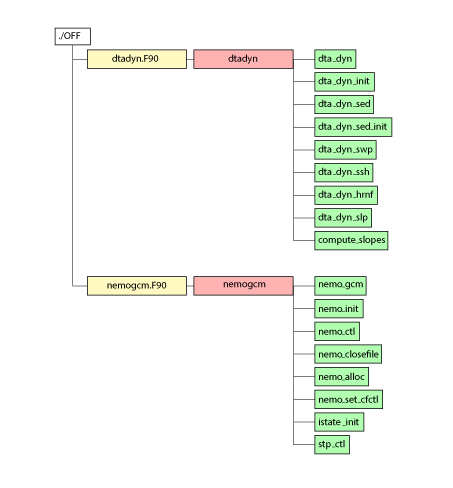

NEMOmodmap¶
Scripts for creating module and subprograms maps from NEMO source
Introduction¶
These pages describe a pair of bash scripts which can be used to generate module and subprogram maps from the NEMO source files. The process is not fully automated since a small amount of hand editing is required in some cases. These special cases will be explained in greater detail but generally the process of creating a map such as:
requires just a few steps:
#
# set modmap_dir to the working directory containing copies of
# the NEMOmodmap scripts and a (initially empty) build subdirectory
#
cd src/OCE/OFF
$modmap_dir/mksubmodlist
#
# Hand edit newsubmod.list if necessary
#
mv newsubmod.list $modmap_dir/OFF_submod.list
cd $modmap_dir
./submod.sh OFF_submod.list > OFF_submod.tex
#
pdflatex -output-directory=./build OFF_submod.tex
mv ./build/OFF_submod.pdf ./
#
The two bash scripts: mksubmodlist and submod.sh are merely manipulating textual information gleaned from the code and wrapping this with latex commands. The final map is rendered by the pdflatex command. This process makes use of the TikZ latex package which comes as standard with most modern latex installations.
The mksubmodlist script¶
This first script is little more than an extended grep command designed to extract the module name and list the names of any contained subprograms within any .F90 or .h90 files with the current directory. This script relies on the NEMO coding conventions to provide correct information but could be easily adapted for other styles. The script is simply:
#!/bin/bash
for f in *.[Fh]90
do
echo $f >> newsubmod.list
grep -e'^ *SUBROUTINE' -e'FUNCTION' -e'^ *MODULE' -e'CONTAINS' \
-e'^ *INTERFACE' -e'^ *RECURSIVE SUB' $f \
| grep -v 'END FUNCT' | grep -v '^#' | grep -v 'PROCEDURE' \
| sed -e 's/(.*) FUN/ FUN/1' | sed -e 's/(.*)//' \
| sed -e 's/(.*$//' | grep -v '^ *!' >> newsubmod.list
echo " " >> newsubmod.list
done
which, when executed in, for example, the OFF directory produces the following newsubmod.list file:
dtadyn.F90
MODULE dtadyn
CONTAINS
SUBROUTINE dta_dyn
SUBROUTINE dta_dyn_init
SUBROUTINE dta_dyn_sed
SUBROUTINE dta_dyn_sed_init
SUBROUTINE dta_dyn_swp
SUBROUTINE dta_dyn_ssh
SUBROUTINE dta_dyn_hrnf
SUBROUTINE dta_dyn_slp
SUBROUTINE compute_slopes
nemogcm.F90
MODULE nemogcm
CONTAINS
SUBROUTINE nemo_gcm
SUBROUTINE nemo_init
SUBROUTINE nemo_ctl
SUBROUTINE nemo_closefile
SUBROUTINE nemo_alloc
SUBROUTINE nemo_set_cfctl
SUBROUTINE istate_init
SUBROUTINE stp_ctl
This file conforms to the expected structure and requires no hand-editing. Other examples which require some manual intervention will be described later but the required structure is a series of blocks each containing:
- The name of the source file followed by
- A MODULE statement giving the name of the module followed by
- A CONTAINS statement followed by
- A list of SUBROUTINE, RECURSIVE SUBROUTINE or FUNCTION statements followed by
- A blank line
The submod.sh script¶
Conversion of these simple lists into appropriate latex instructions is done by the submod.sh script. Whilst the final Latex document can appear long and complex there is much repetition. At its heart the script is writing a latex pre- and post-amble for each map and converting each entry in each list to a labelled node in a TikZ tree diagram. Ignoring the preamble, the heart of the OFF directory example looks like this:
\usepackage{tikz}
\usepackage{adjustbox}
\usetikzlibrary{trees}
.
.
\begin{tikzpicture}[%
grow via three points={one child at (0.5,-0.8) and
two children at (0.5,-0.8) and (0.5,-1.6)},
edge from parent path={(\tikzparentnode.south) |- (\tikzchildnode.west)}]
\node {./OFF}
child { node [f90fil] {dtadyn.F90}
child [gright] { node [f90mod] {dtadyn}
[gdown] child { node [f90sub] {dta\_dyn}}
child { node [f90sub] {dta\_dyn\_init}}
child { node [f90sub] {dta\_dyn\_sed}}
child { node [f90sub] {dta\_dyn\_sed\_init}}
child { node [f90sub] {dta\_dyn\_swp}}
child { node [f90sub] {dta\_dyn\_ssh}}
child { node [f90sub] {dta\_dyn\_hrnf}}
child { node [f90sub] {dta\_dyn\_slp}}
child { node [f90sub] {compute\_slopes}}
}
}
child [missing] {}
child [missing] {}
child [missing] {}
child [missing] {}
child [missing] {}
child [missing] {}
child [missing] {}
child [missing] {}
child [missing] {}
child { node [f90fil] {nemogcm.F90}
.
.
;
\end{tikzpicture}
There are some subtle complexities, such as: offsetting single subprogram names so that they stand out better if sandwiched between lists for modules containing multiple subprograms; but otherwise the logic for converting lists into latex commands is quite straight-forward.
The main style elements are defined in the preamble and are:
\tikzstyle{every node}=[draw=black,thick,anchor=west]
\tikzstyle{f90fil}=[rectangle, minimum height=0.65cm, minimum width=3.5cm, draw=black,fill=yellow!30]
\tikzstyle{f90mod}=[rectangle, minimum height=0.65cm, minimum width=3.5cm,draw=black,fill=red!30]
\tikzstyle{f90sub}=[minimum height=0.65cm, draw=black,fill=green!30]
\tikzstyle{f90fun}=[minimum height=0.65cm, draw=black,fill=blue!30]
\tikzstyle{f90gen}=[minimum height=0.65cm, draw=black,fill=orange!35]
\tikzstyle{gright}=[grow=right, level distance=2cm, edge from parent path={(\tikzparentnode.east) |- (\tikzchildnode.west)}]
\tikzstyle{gdown}=[ grow via three points={one child at (2.5,0.0) and
two children at (2.5,0.0) and (2.5,-0.8)},
edge from parent path={(\tikzparentnode.east) |- (\tikzchildnode.west)}]
These can be easily altered if colours or sizes are not to your taste.
Much of the more obscure latex within the pre- and post-amble parts deals with splitting oversize maps across multiple pages (thanks Stack exchange!). This happens frequently and is handled by drawing the tikzpicture within a virtual box environment and comparing its height to the page’s textheight. When necessary, the image is split and rendered across however many pages are required. The image is continuous across pages but the splitting will not necessarily occur between nodes:
\begin{lrbox}{\mysavebox}%
\begin{tikzpicture}
.
.
\end{tikzpicture}
\end{lrbox}%
%
\ifdim\ht\mysavebox>\textheight
\setlength{\myrest}{\ht\mysavebox}%
\loop\ifdim\myrest>\textheight
\newpage\par\noindent
\clipbox{0 {\myrest-\textheight} 0 {\ht\mysavebox-\myrest}}{\usebox{\mysavebox}}%
\addtolength{\myrest}{-\textheight}%
\repeat
\newpage\par\noindent
\clipbox{0 0 0 {\ht\mysavebox-\myrest}}{\usebox{\mysavebox}}%
\else
\usebox{\mysavebox}%
\fi

{kind=link}